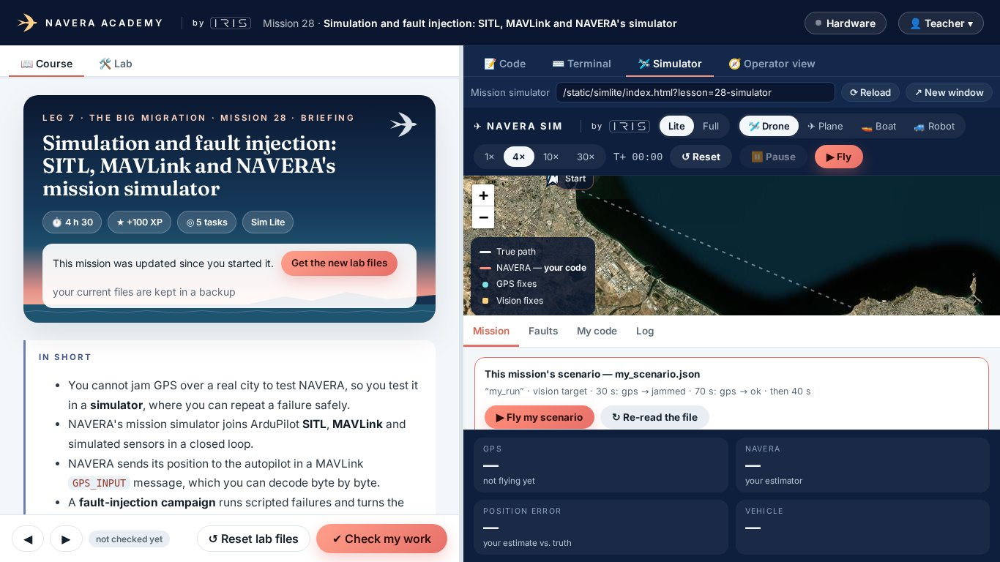
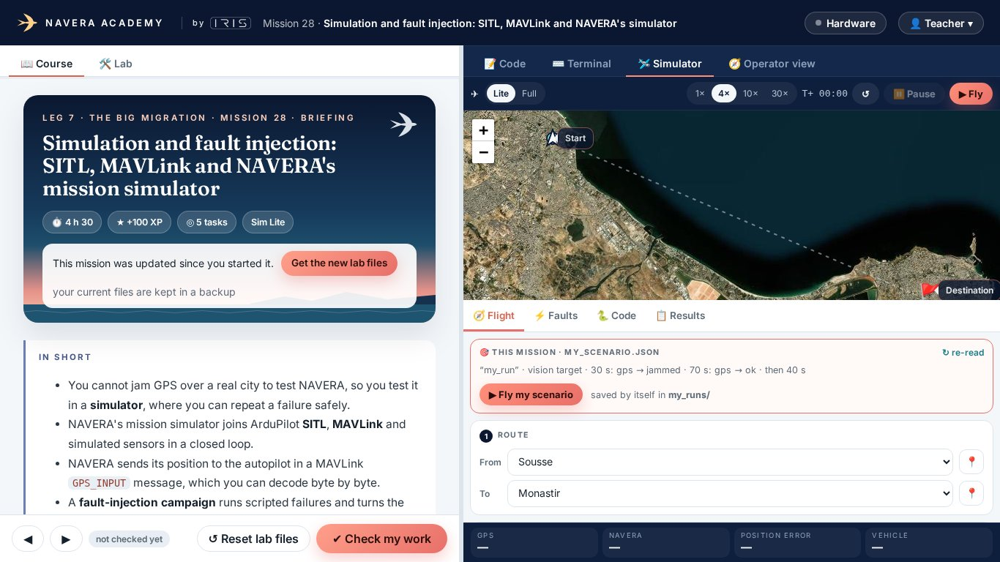
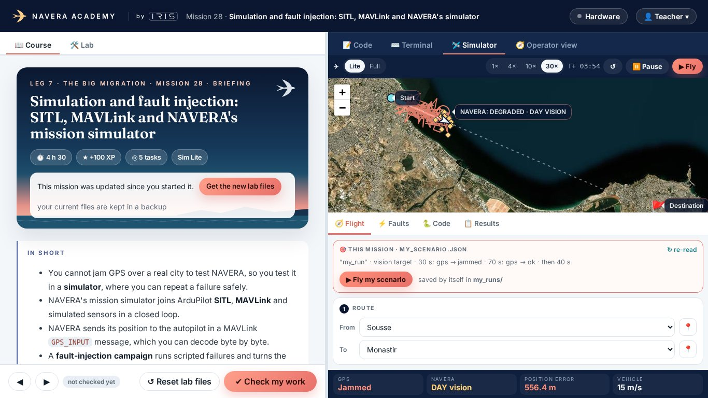
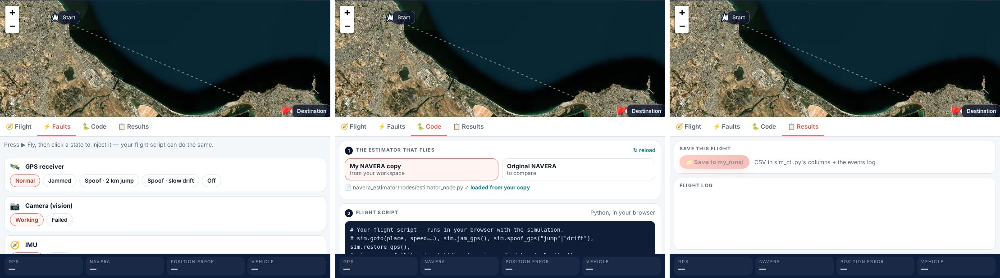
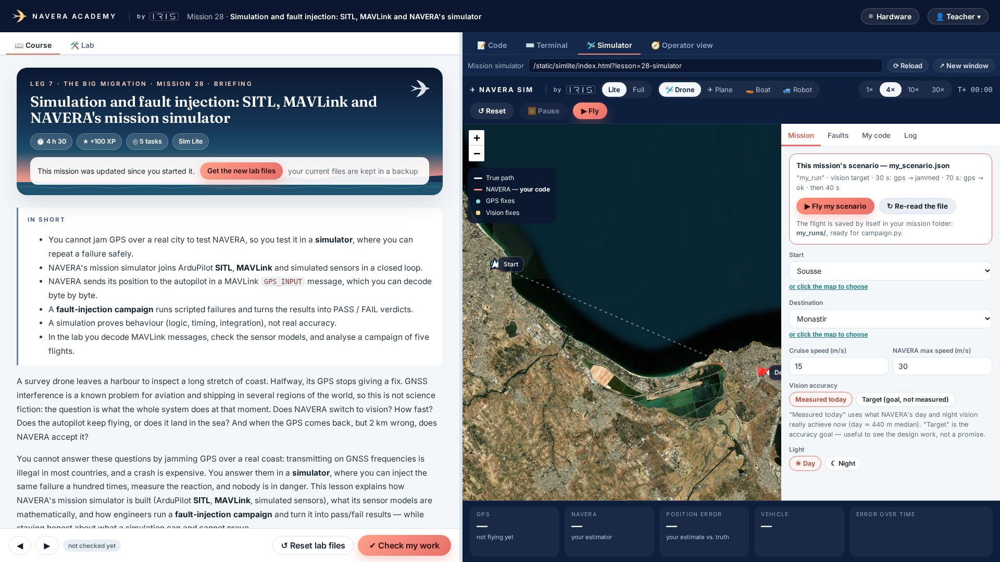
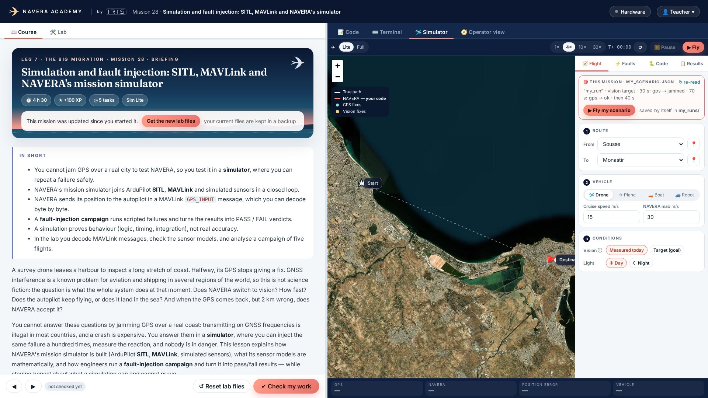

Real screenshots of the dashboard (mission 28). Now live for everyone (2026-10-08). After: one row of controls, the dashboard's address row gone, a bigger map, the panel in 4 tabs (Flight · Faults · Code · Results) with numbered cards, and the status cards as one slim row of chips.





